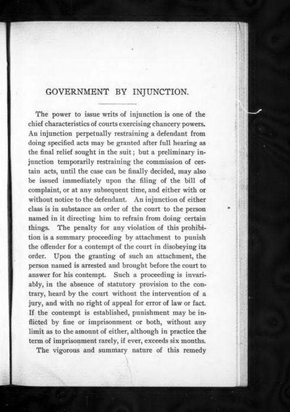

Dunbar, 1898: o “governo por injunção” e os limites da justiça
Leitura: 12 min
William H. Dunbar examina as injunções contra grevistas, do caso Debs ao caso Lennon, e sustenta que os tribunais de equidade passaram a punir crimes sem júri e a legislar para “todas as pessoas”.


Em 2 de julho de 1894, em plena greve da American Railway Union em apoio aos operários da Pullman, os Estados Unidos entraram como autores no tribunal federal de circuito de Chicago. Pediam uma injunção contra dirigentes do sindicato e, nas palavras da ordem concedida, contra todos os que se associassem a eles “e todas as outras pessoas quaisquer”. Semanas depois, os processos por desacato acusavam os réus de, desafiando a ordem, terem continuado a comandar greves, com o incêndio de pelo menos mil vagões de carga, a queima de torres de sinalização e a perda de muitas vidas. Eugene Debs, presidente do sindicato, foi preso. A Suprema Corte, em voto unânime do juiz Brewer, confirmou a competência do tribunal.
É esse caso que William H. Dunbar toma como tipo do uso mais extremo dos poderes de equidade em Government by Injunction, nº 1 do terceiro volume dos Economic Studies, de fevereiro de 1898. Uma nota informa que o texto saiu antes na Law Quarterly Review, de Londres, em outubro de 1897, e foi republicado com pequenas alterações para tornar o raciocínio claro também a leigos. O estudo é um argumento jurídico contínuo, sem divisão em capítulos, e trata de economia pelo lado das instituições: quem pode impedir uma greve, por qual procedimento e com que garantias.
O que é uma injunção e por que ela pesa tanto?
Dunbar começa pela mecânica. A injunção é uma ordem de um tribunal com poderes de chancelaria, a jurisdição de equidade herdada da Inglaterra, que manda alguém abster-se de certos atos. Pode ser definitiva, após o julgamento, ou preliminar, concedida assim que a petição é apresentada, com ou sem aviso ao réu. Quem a desobedece é preso e levado ao tribunal para responder por desacato. Esse processo, salvo lei em contrário, corre sem júri e sem direito de recurso por erro de fato ou de direito, e a pena pode ser multa, prisão ou ambas, sem limite legal de valor ou de duração.
Para o autor, a rapidez desse remédio o torna excepcionalmente eficaz e excepcionalmente sujeito a abusos. O poder que o chanceler Kent chamou de braço forte do tribunal passou a servir a fins não previstos na origem, de contratos de exclusividade de cantores e atores a leis penais que os júris aplicavam mal, e, nos conflitos trabalhistas, tornou-se uma das armas reconhecidas. A expressão “governo por injunção”, registra Dunbar, já figurava em plataformas políticas.
Como a injunção chegou às greves?
O precedente inglês é do vice-chanceler Malins, em Springhead Spinning Co. v. Riley, que proibiu dirigentes de um sindicato de afixar cartazes pedindo aos operários que se afastassem de uma fábrica em greve por redução de salários. A decisão foi criticada por tribunais ingleses e pelo presidente da Suprema Corte de Massachusetts, Gray, mas foi amplamente seguida. Nos Estados Unidos, Dunbar cita Sherry v. Perkins, de 1888, em que fabricantes de calçados obtiveram a proibição de uma faixa que chamava os montadores a não trabalhar para eles.
Os boicotes e as greves de solidariedade ampliaram a demanda, porque a ação de indenização valia pouco diante da insolvência dos réus. Vieram injunções contra a pressão sobre leitores e anunciantes de um jornal em Ohio, contra grevistas que seguiam trabalhadores até as pensões na Pensilvânia e contra uma federação de sindicatos de Nova Jersey que boicotava um jornal. Em Vegelahn v. Guntner, de novembro de 1896, a maioria da corte de Massachusetts proibiu piquetes; os juízes Field e Holmes divergiram, este por ver nos fatos apenas o uso legítimo de meios lícitos.
Em 1893 e 1894 vieram as greves ferroviárias, levadas aos tribunais federais por envolverem comércio interestadual, correio e, às vezes, ferrovias sob administração judicial. Num caso de Toledo, a Brotherhood of Locomotive Engineers foi proibida de aplicar regras que mandavam seus filiados recusar carga de uma linha em greve; o maquinista podia deixar o emprego, mas, se ficasse e recusasse a carga, cometia desacato. Em dezembro de 1893, os administradores judiciais da Northern Pacific, nomeados pelo tribunal de Milwaukee, obtiveram ordem contra a saída combinada dos empregados; em recurso, a decisão foi reformada quanto à ilegalidade necessária da greve. A sequência culminou no caso Debs.
O que o autor dá como assentado?
Dunbar não discute se as greves eram justas. Dá como estabelecido que trabalhadores podem se organizar para melhorar sua condição, que podem fazer greve por salários ou outras vantagens, desde que sem violência, e que a equidade jamais obriga alguém a continuar prestando serviços pessoais, nem mesmo com contrato expresso. Até onde os grevistas podem ir para dissuadir quem tomaria seus lugares é, para ele, questão de grau, que cada tribunal decidirá conforme as opiniões de sua época e comunidade. Também dá como assentado que os tribunais de equidade protegerão empregadores contra certos danos. A questão é em que circunstâncias e até onde.
Os tribunais americanos, sobretudo os federais, teriam ido além de qualquer limite reconhecido em duas direções. Ao proibir atos de natureza criminal e puni-los por desacato, foram acusados de usurpar as funções do direito penal. Ao dirigir ordens a todas as pessoas, partes ou não, identificadas ou não, foram acusados de baixar decretos mais legislativos que judiciais. O caso Debs reúne as duas acusações e, aprovado pela Suprema Corte, tende a virar precedente de grande peso.
Pode um tribunal de equidade proibir crimes?
“Não é uma das funções de um tribunal de equidade impedir a prática de crimes ameaçados.” (It is not one of the functions of a court of equity to prevent the commission of threatened crimes.)
Dunbar apoia a tese em Lord Eldon e em decisões americanas, como a do Alabama que recusou proteger uma ferrovia contra um proprietário que ameaçava matar os operários: para o crime, bastavam os tribunais comuns. A competência sobre perturbações públicas, admite, sobrevive mesmo quando o ato é crime. Mas o fundamento dela é a maior eficácia do remédio: parar uma obstrução de estrada antes do dano irreparável. Uma injunção contra agressão ou destruição violenta de propriedade não tem outra força que o medo da pena, e essa sanção a lei já impõe ao mesmo ato. O que a polícia e, se preciso, a força militar devem impedir não ganha nada com uma ordem judicial a mais.
Os legislativos de alguns estados, porém, usaram a equidade para reprimir crimes. O Kansas proibiu bebidas alcoólicas por emenda constitucional em 1880 e declarou perturbação pública todo edifício usado no comércio proibido, a ser fechado por injunção. A Suprema Corte considerou a lei constitucional em Kansas v. Ziebold e, em caso de Iowa, admitiu a punição por desacato sem júri. Para Dunbar, essas decisões provam que o legislativo pode fazer isso, não que os tribunais devam fazê-lo por conta própria.
Qual é, afinal, a vantagem da via da equidade?
Analisada a fundo, responde o autor, a única inadequação do remédio comum é o júri. São as salvaguardas da liberdade individual que tornam a punição de um ato como crime menos certa e menos rápida que a punição do mesmo ato como desacato. Ele cita o voto divergente do juiz Field em Carleton v. Rugg, segundo o qual havia muitos indícios de que a principal razão da lei de bebidas fora evitar o julgamento por júri, e um juiz do Kansas que via na acusação grande desconfiança dos jurados. O mesmo motivo, diz Dunbar, leva os empregadores à equidade: se o desacato fosse julgado por júri, as injunções seriam reconhecidas como inúteis.
Os tribunais de equidade, lembra, sempre hesitaram em tomar o lugar do júri; nos Estados Unidos ainda se recusam injunções contra difamação, para que a liberdade de imprensa fique a cargo dos jurados. Se a dificuldade de obter condenações é tão séria, conclui, o remédio cabe ao legislativo.
Uma ordem pode valer para “todas as pessoas”?
A segunda objeção é ao alcance pessoal. No caso Debs, os processos por desacato atingiram também pessoas que não eram partes, e os autos nem mostram que elas se enquadrassem entre os associados aos réus. A Suprema Corte não examinou o ponto no caso Debs, mas o decidiu em In re Lennon. Lennon era maquinista da Lake Shore & Michigan Southern, uma das ferrovias atingidas pela injunção de Toledo; conhecendo a ordem, recusou-se a puxar um vagão da autora sem deixar o emprego.
“Para tornar uma pessoa sujeita a uma injunção, não é necessário que ela tenha sido parte no processo” (To render a person amenable to an injunction it is neither necessary that he should have been a party to the suit)
Para Dunbar, a doutrina representa uma extensão momentosa, sem amparo em precedentes. Tribunais existem para decidir controvérsias entre indivíduos; a injunção preliminar é incidente dessa função. Declarar de antemão, para toda a comunidade, o que pode e o que não pode ser feito é, por natureza, um direito legislativo. A jurisdição de equidade, sem lei especial, é pessoal e só alcança as partes. Seria anômalo que uma ordem provisória tivesse força que nem a sentença final tem.
A forma usual, que proíbe o réu e seus agentes e empregados, não viola o princípio, porque esses agem em nome do réu. Quem ajuda o réu a violar a ordem também pode ser punido, não por violar a injunção, mas por frustrar a ação do tribunal. Já quem age por conta própria, afirmando direito seu, não fica obrigado. Dunbar cita um caso de Nebraska: proibidos os empreiteiros de destruir os trilhos de uma companhia de bondes ao construir um esgoto em Omaha, o prefeito mandou outros fazerem a obra, e o tribunal entendeu que não houve desacato, porque a cidade não era parte.
Por que insistir, se os punidos violaram a lei?
O fecho reconhece o incômodo de criticar medidas destinadas a preservar a ordem. Dunbar escreve que nenhum dos punidos por violar tais injunções merecia simpatia pessoal e que Debs, apanhado em flagrante desafio às leis, merecia a pena mais severa que a lei penal autorizava. Justamente por isso, argumenta, era mais necessário que a repressão fosse plenamente legítima, sem que pesasse sobre o Judiciário a suspeita de torcer princípios para atender às paixões do momento. O poder de punir por desacato, descrito como o mais irrestrito do sistema de governo, deveria ser poupado de casos próprios dos tribunais criminais e do júri.
“Nenhum caminho é mais perigoso do que justificar o exercício de um poder duvidoso” (no course is more dangerous than to justify the exercise of a doubtful power)
A conclusão é que, mesmo que a utilidade prática do procedimento fosse demonstrada, um édito de equidade dirigido a todos, proibindo atos já proibidos por lei para punir quem os praticasse, seria uma inovação que só a autoridade legislativa poderia justificar, e, mesmo assim, uma experiência perigosa para as instituições e com pouca promessa de sucesso duradouro. Os tribunais de equidade, escreve, não podem substituir de forma permanente uma administração executiva capaz e honesta; a tentativa acabaria rebaixando o Judiciário ou levando ao desrespeito de suas ordens.
Na minha leitura
Na minha leitura, o argumento central de Dunbar é de economia do cumprimento da lei antes de ser de doutrina jurídica. Ele mostra que a injunção contra atos violentos não acrescenta nenhuma proibição nova: o que muda é a probabilidade e a velocidade da punição, porque o caso sai do júri e vai para o juiz, sem recurso. Escolher o foro é escolher a taxa esperada de condenação, e é isso que empregadores e legislativos buscavam.
O estudo também ilumina um problema permanente de desenho institucional: quando a via ordinária parece lenta ou pouco confiável, a tentação é criar atalhos com instrumentos feitos para outra finalidade. Dunbar não nega o problema da ordem pública; sustenta que a correção deve vir do legislativo e do Executivo, e que o custo de usar o tribunal como polícia é a perda de previsibilidade das regras.
Glossário
- Equidade (equity)
- ramo da justiça anglo-americana, herdado da chancelaria inglesa, que dá remédios além da indenização, como ordens de fazer ou não fazer.
- Injunção (injunction)
- ordem judicial que manda alguém abster-se de certos atos; pode ser preliminar ou definitiva.
- Desacato (contempt of court)
- desobediência a uma ordem do tribunal, punida pelo próprio juiz em processo sumário.
- Perturbação pública (public nuisance)
- ato ou uso de propriedade que prejudica o público, como obstruir uma estrada.
- Boicote
- campanha para que consumidores, anunciantes ou fornecedores deixem de negociar com uma empresa.
- Greve de solidariedade (sympathetic strike)
- paralisação de trabalhadores sem queixa própria, em apoio a grevistas de outra empresa.
- In personam
- jurisdição que alcança apenas as pessoas que são partes no processo.
- Habeas corpus
- ação para obter a soltura de quem está preso ilegalmente.
- Administrador judicial (receiver)
- pessoa nomeada pelo tribunal para guardar e gerir bens em litígio, como uma ferrovia insolvente.
Fontes
- Government by Injunction (pp. 5–43). Internet Archive (número completo, PDF)
- Número completo digitalizado (domínio público): Internet Archive.
Documento em domínio público (EUA, publicado antes de 1931), via JSTOR Early Journal Content e Internet Archive. Resumo e comentário do autor deste site, sem afiliação com a American Economic Association. Encontrou um erro? Escreva: a correção é publicada no próprio texto, com data.
← ES 12 · Willcox, 1897: onde viviam os americanos do censo de 1890? ES 14 · Manual de 1898 e a reunião de Cleveland: gás, tarifas e moeda →